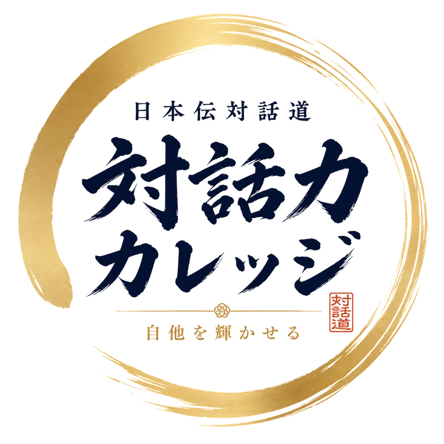
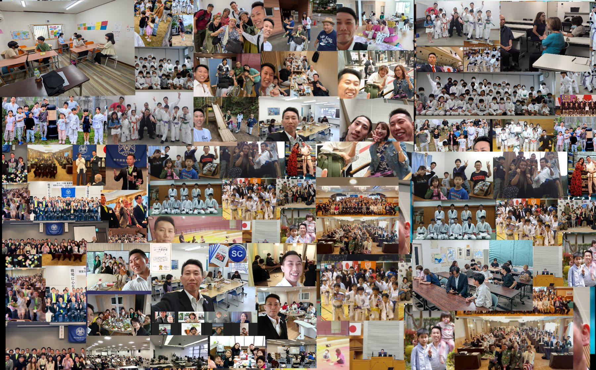
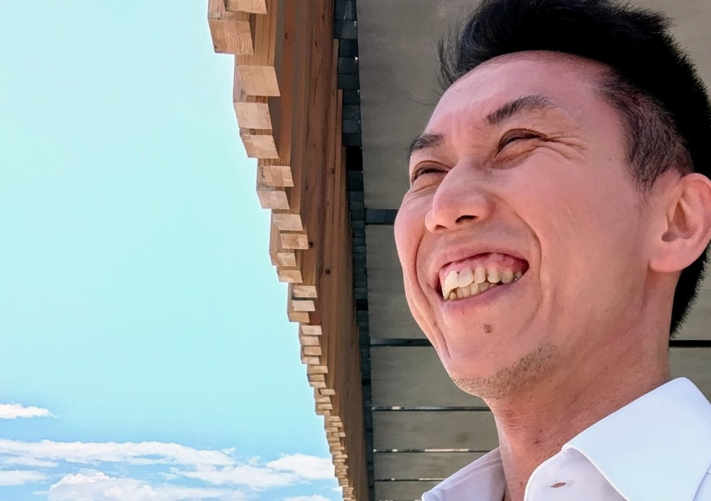

お子さん・受験生の方へ
自分らしさを引き出し、
望む道を楽しく歩める。
聴く・問いかける・認める。この稽古を重ねた子は、友だち関係が変わり、家庭が変わり、そして成績や進路が後からついてきます。「ジュニア対話力検定」で、一歩ずつ進めます。
- 5級＝傾聴／4級＝質問／3級＝承認／2級＝フィードバック／1級＝統合
- 合格の基準は「やってみた」こと。丁寧に応援します

日本伝対話道 対話力カレッジ
勝ち負けを競うのではなく、相手の良いところを見つけ、自分も相手も整えていく。
日本の武道が育ててきた身体の知恵と、現代の対話の技術を一つにした学びです。
戦わずして、全員が輝く。
公式LINEから、30秒でお申し込みいただけます。
2026年11月3日（文化の日）開学。
全国6支部で、無料体験会を随時ひらいています。
01
似た感覚、ご経験はないでしょうか。
実はこれら、すべて私自身が、日本伝対話道を体系的に創り上げる前に経験したことです。
もし人間関係がすべて順風満帆だったなら、私はこの道を歩むことはなかったと思います。
苦しみは、誰かを照らす光に変わる。
02
知識を覚える講座ではありません。「今日、子どもに・部下に、どう声をかけるか」。
そこまで具体的に落とし込んで、体で身につけていきます。
だから、翌日から変わります。お子さんから、働く方から、経営者まで。入口は3つあります。
お子さん・受験生の方へ
聴く・問いかける・認める。この稽古を重ねた子は、友だち関係が変わり、家庭が変わり、そして成績や進路が後からついてきます。「ジュニア対話力検定」で、一歩ずつ進めます。
大人・働く方へ
我慢するのでも、言い負かすのでもない、第三の道があります。家庭でも職場でも使える対話の型を、4級から1級まで順に身につけます。
経営者・組織の方へ
制度を変える前に、交わされている言葉を変える。離職やすれ違いの多くは、対話の質の問題として立て直すことができます。研修・顧問・プロデュースの形でお手伝いしています。
03
コーチング、NLP、選択理論心理学。優れた理論はすでにあります。対話力カレッジはそれらを大切にした上で、 日本武道の哲学・精神性・身体性を土台に置いています。違いは、この3つに表れます。
其の一
身体を整えると、心も整う。多くのメソッドはこれを「目標」に置きますが、対話道ではここをスタートラインとします。整った状態から、すべてが始まります。
其の二
書き順は手が覚え、自転車は考えずに乗れる。稽古の繰り返しで身体に蓄えられ、言葉にできなくても再現できるもの。対話の間合いや声の置き方も、ここに蓄まります。
其の三
頭だけでなく、全身の神経を使って相手を捉える働き。考えるより先に、身体が応じる。この仕組みを稽古で開くほど、身体知は深く蓄まります。
理論という普遍性と、日本武道の身体性という独自性。
この両輪が、日本伝対話道の形をつくっています。
04
無料の体験会から、指導者の道まで。急ぐ必要はまったくありません。 どの段階でも、その方の日常は確かに変わります。それが、この道の設計です。
まずはここから。「いいとこ探し」をはじめ、その日のうちに持ち帰れる実践を体験していただきます。各支部で随時ひらいています。
小学1年生から中学3年生まで。5級＝傾聴／4級＝質問／3級＝承認／2級＝フィードバック／1級＝統合と、一歩ずつ進みます。修了された方には「認定ジュニアコーチ」として、認定証とバッジをお渡しします。
1級を修了された方は、試験免除で対話力4級に進めます（ブリッジ）。
自分の対話を磨く道。4級＝対話の型を知る／3級＝型を使える／2級＝相手に合わせられる／1級＝場をつくれる。修了された方には「認定コーチ」として、認定証とバッジをお渡しします。
級位の認定に期限はありません。一生のものです。
実力が、プロの域に至る段。
プロとして立つ段。独立への支援がつきます。
人に教える段。登壇の資格が与えられます。
道を設計する段。対話道の最高段位です。
段位は、講座の修了に加えて指導実績を認定の要件としています。
※ 返金のお申し出は、初回講座の当日までにお願いします。お子さまの場合は、保護者の方にご判断いただきます。
05
養成講座・認定試験・認定証・バッジ・登録費まで、すべて含んだ金額です。 検定そのものに、あとから追加でいただくものはありません。分割でのお支払いも承ります。
| コース | 時間 | 位置づけ | 費用 |
|---|---|---|---|
| ジュニア5級 | 2時間 | はじめの一歩 | 6,500円 |
| ジュニア4級 | 3時間 | 質問を学ぶ | 7,800円 |
| ジュニア3級 | 4時間 | 承認を学ぶ | 9,100円 |
| ジュニア2級 | 5時間 | フィードバックを学ぶ | 10,400円 |
| ジュニア1級 | 6時間 | 対話力4級へつながる | 11,700円 |
| 一括（5級〜1級） | 20時間 | まとめて学ぶ | 35,800円 |
| コース | 時間 | 位置づけ | 費用 |
|---|---|---|---|
| 対話力4級 | 6時間 | 基礎／対話の型を知る | 11,700円 |
| 対話力3級 | 8時間 | 初級／型を使える | 14,700円 |
| 対話力2級 | 10時間 | 中級／相手に合わせられる | 19,700円 |
| 対話力1級 | 14時間 | 上級／場をつくれる | 27,000円 |
ブリッジ ジュニア1級を修了された方は、講座の受け直しも認定試験も不要で、対話力4級として認定されます（登録費 3,900円のみ）。
検定を受けられた方には、学びを続けるためのオンラインコミュニティをご用意しています。 上記の検定費用には、講座の期間中と、修了後3か月分の会員資格が含まれています。
ジュニア
月額 1,000円
大人
月額 2,000円
4か月目以降を続けるかどうかは、ご本人が決めてください。満了が近づいたら、支部長から必ず 「続けられますか」とお声をおかけします。引き止めはいたしません。 退会のお手続きは、入会よりも簡単にしてあります。
次の級に進まれている間は、会費をいただきません（お支払いを止め、修了から3か月を過ぎたら自動的に再開します）。 学び続けておられる間は、ずっとコミュニティメンバーです。
06
実際に学ばれた方から届いた言葉を、そのまま掲載しています。
対話道について、全ての原理原則を教えてもらい、終始「なるほど」状態で、コーチのあり方や基本の心構えを再度認識し直すことができました。また、自分の未熟だと感じている点についても考えることができ、それを改善していくことが今後の課題だなと思いました。
変化は成長のチャンス。日常に起こるマイナス感情も“変化”と捉え、自分の成長に繋げていきたいと思いました。姿勢から潜在意識も変わると聞いたので、それも日常で意識的に取り入れていこうと思いました！
生きている中で訪れる「縁」を活かすためには、「因（あり方や動機）」が整っていることが重要、そのあり方の整え方や視座を高めるためのプロセスをイメージすることが出来る。
対話においても敵を作らず、すべてを有意義なものとするための項目が、経験則や根拠となる数式を用いて説明されており、すべてが見事に腑に落ちる。全ての項目で具体的な問いの例をあげてくれていることで、各項目の意図が分かりやすく、即実践にうつせてありがたい。
人の粗を探して攻撃することが無自覚に行われやすい時代の中で、これからの時代を担う世代にぜひとも伝えていきたい。
山村さんは、私のコーチングの師匠です。5年前に受講した、世界一シンプルなコーチングは「傾聴」に徹することでした。思い返せば、この5年間、何度も山村さんの言葉を思い出します。「書くことは相手へのプレゼント」。確実に、人間関係をよくしていただいたと思います。
今回は、そのコーチングを学ばれた方への改良版「対話道」を受講しました。21項目ある学びは、一つ一つが源泉！！今日学ばせていただいたことを、日々、出会う人々に活かして実践していき、これからも良好な人間関係を築いていきたいと思います。
トレーナー養成講座を受講しました。目から鱗のことが多い学びと何より分かりやすく楽しく話してくださるので、楽しく聞き入ってしまう講座でした。そして、このシンプルコーチングは仕事以外の普段の生活や友人関係などにも生かされることを実感し、人として成長できるスキルになると感じる講座でした。
傾聴力や質問力などもついてきて、人と会話するのが楽しくなってきました。今後、仕事にも生かしたいです。
※ お名前は、ご本人の了承のもとイニシャルで掲載しています。
07
対話力カレッジの学びは、教室と道場の現場で、長い時間をかけて確かめられてきたものです。

08
それぞれの支部長が、自分の専門とこれまでの人生を携えて、対話道を伝えています。 お近くの支部、または気になる支部長のもとへ。無料体験会は、どの支部でも受けていただけます。
日本伝対話道 参段
書道、青少年育成、英語教育の専門家
常に笑顔で寄り添い本質を大切にする
支部長 崎原 かおる
日本伝対話道 弐段
野球指導、青少年育成、文武両道の専門家
明るく優しく力強い指導を大切にする
支部長 森中 征勝
日本伝対話道 弐段
栄養学、人のメンタルサポートの専門家
忖度なく人のために感じたことを伝える
支部長 長谷川 紗也
日本伝対話道 参段
英会話、起業家支援の専門家
常に安心安全な場をつくりサポートする
支部長 村田 有希
日本伝対話道 参段
心と身体を緩めて整える専門家
卓越した愛情と経験値で伴走する
支部長 井上 恵子
日本伝対話道 弐段
不登校支援、英語指導の専門家
学校も家庭も含めた総合的で的確な指導
支部長 国弘 紀子
どの支部がよいか迷われる方は、公式LINEでご相談ください。ご希望とお住まいに合わせてご案内します。 公式LINEで相談する

09
山村 和也やまむら かずや
対話力カレッジ 主宰／日本伝対話道 家元
16歳で日本武道と出会いました。勝ち負けのその先に「戦わずして整える」という在り方があることを、身体を通して教わりました。
一方で、学習・進路指導では30年を超えて子どもたちと向き合い、経営者の方々のご相談にも乗ってきました。そこで分かったのは、成績の問題も、組織の問題も、その多くは「対話の質」の問題として立て直せる、ということでした。
武道の身体知と、現代の対話の技術。この二つを一つにまとめたものが、日本伝対話道です。この道を、次の世代へ受け渡していくことが、私の残りの人生の仕事です。
10
素晴らしく優秀なAIもまた、私たちの対話力によって、はじめて本当の力を発揮します。 身の回りのあらゆるものにAIが実装され、その一つひとつと私たちは対話することになる。 だからこそ、人としての根本である「対話力」が、これまで以上に求められる時代が来ています。
対話力は、人と人をつなぐ力であり、
これからは、AIと人をつなぐ力にもなる。
開学のご案内
文化の日。日本の文化を、対話という形で次の世代へ受け渡していく日にしたいと考えました。
11
まったく問題ありません。受講される方のほとんどは、武道の経験がない方です。道着も、組み手のような稽古もありません。武道から受け継いでいるのは「姿勢」や「間合い」といった身体の使い方の知恵であり、それは普段の会話の中で活きるものです。
いたしません。私たちは「扉は相手が開く」を原則にしています。体験会は、まずその日の学びを持ち帰っていただく場です。続けたいと感じられた方にだけ、あらためてご案内しています。
はい、ジュニア対話力検定はお子さん向けの体系です。保護者の方にご一緒いただくこともできます。お子さんの年齢や状況に応じてご案内しますので、公式LINEからお気軽にご相談ください。
体験会・対話力基礎講座は無料です。ジュニア対話力検定と対話力 級位（4級〜1級）の費用は、費用のとおりです。認定証・バッジ・登録費まで含んだ金額で、追加でいただくものはありません。講座の期間中と修了後3か月分のオンラインコミュニティ会員資格も、この中に含まれています（4か月目以降はジュニア月1,000円・大人月2,000円。続けるかどうかはご本人が決められ、引き止めはいたしません）。段位は、指導実績なども含めてお一人ずつ異なるため、支部長より個別にご案内します。
オンラインでの開催もございます。お住まいの地域と、ご希望の形（対面／オンライン）を公式LINEでお知らせください。最適な支部・日程をご案内します。
はい、承っています。管理職の方の声かけ・面談の質を整えるところから、経営者ご自身の在り方まで、組織の状況に合わせて設計します。まずは公式LINE、またはお問い合わせよりご相談ください。
まずは、無料で。
読むだけでは、対話力は変わりません。
その場で一つ持ち帰っていただける体験会を、全国6支部で随時ひらいています。
売り込みは一切いたしません。合わないと感じられたら、いつでもブロックしていただいて構いません。
戦わずして、全員が輝く。
私たちは、誰かと競争して勝つために存在しているのではありません。関わるすべての人が、一人残らず、自分らしく望む道を楽しく歩めるように。その結果として、成績も、人間関係も、仕事の成果も、自然と好転していく。
自分とも、人とも、自然とも、世の中とも、起こる出来事とも戦わない。すべてを受け容れ、対話で人と人をつなぐ。この輪を、日本へ、そして世界へ。
日本伝対話道 家元 山村 和也